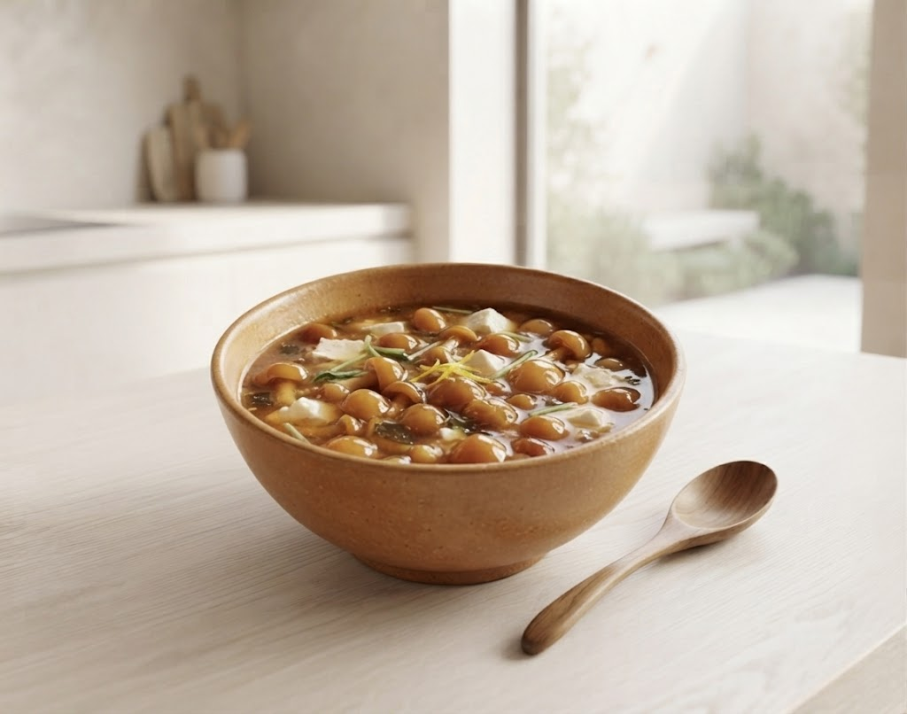
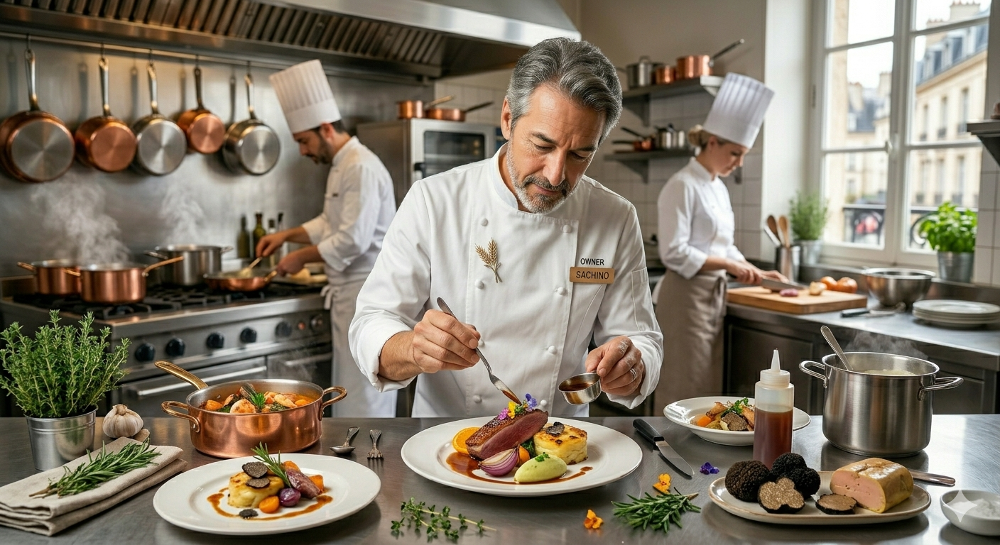

Restaurant Akiyama
数多の食通を唸らせる、イチオシの「なめこのスープ」。
それは、京都の老舗料亭「嘯月」で培った日本料理の繊細さと、
フレンチの独創的な技術が溶け合う、当店のシグネチャー。
良い食材を厳選し、シェフがその味を最大限に引き立てる。一口運べば、素材の力強さと繊細な出汁の香りが広がります。日本料理の「出汁」の概念をフレンチへと昇華させた一皿です。

創業者、秋山 徹。
フレンチの研鑽を積んだ彼が求めたのは、和の精神。
老舗料亭での2年間の修行を経て、繊細な日本料理の技法をフレンチへと昇華させました。
奥様と共に営むこの場所は、ただのレストランではなく、
一人ひとりのお客様と丁寧に向き合う「おもてなしの舞台」です。
山形駅からほど近い、隠れ家的な立地。
スタイリッシュな北欧家具に囲まれた個室で、
背筋が自然と伸びるような、特別な時間をお過ごしください。
住所〒990-0042 山形県山形市七日町5丁目6−30
電話番号023-609-9174
交通山形駅より徒歩約8分
駐車場完備（※少々狭いためご注意ください）
静寂のなかで、料理と丁寧に向き合う新サービス
写真撮影の手を少し止め、目の前の一皿の香り・音・色彩に五感を澄ませていただきたい。そんな想いから、各お料理のストーリーや産地、こだわりを丁寧に綴った「解説カード」をお渡しします。
お食事後は思い出としてお持ち帰りいただけます。ご自宅でも当日の余韻を感じていただく仕掛けです。
店内で過ごした静謐な時間と風味の記憶をご自宅でも。コースの締めくくりに合わせたシェフ厳選のオリジナルティーバッグをカードと共にセットでお渡しします。
大切なご家族やご友人との会話のきっかけや、口コミの輪を広げる小さなギフトです。
「皿がとても素敵で、料理との一体感に見惚れてしまいました。
店主のセンスの良さが伝わります。」
— Anniversary Guest
「スタッフさんの接客も気取ることなく、
少食の娘には量を調整してくれるなど、素晴らしい気遣いでした。」
— Family Guest
完全予約制のため、お早めのご連絡をお願い申し上げます。
公式サイトからのご予約で、シェフ厳選のペアリングドリンクを一杯サービスいたします。